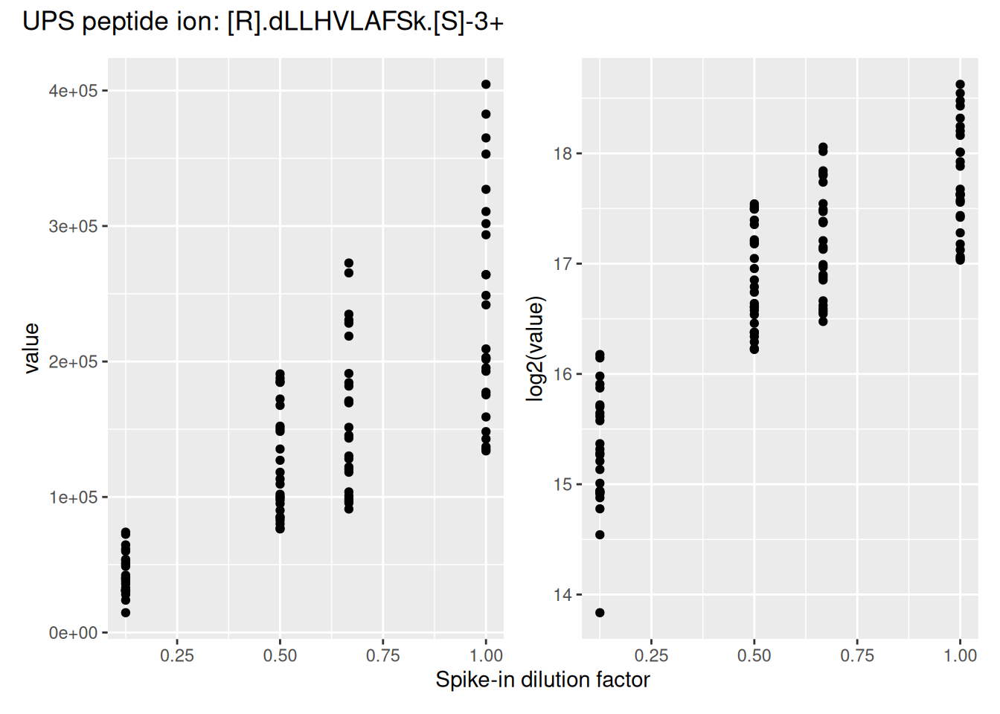
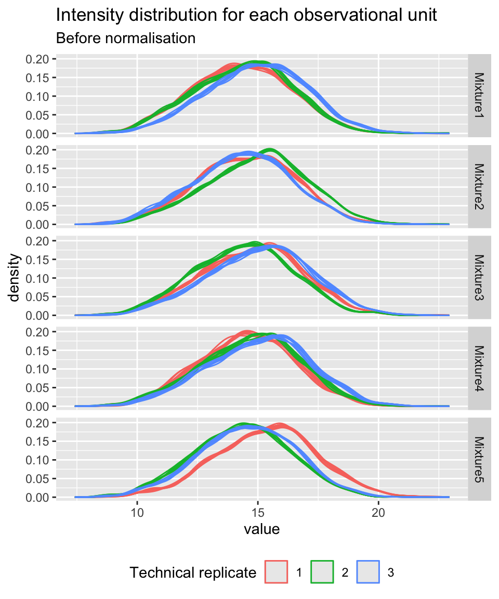
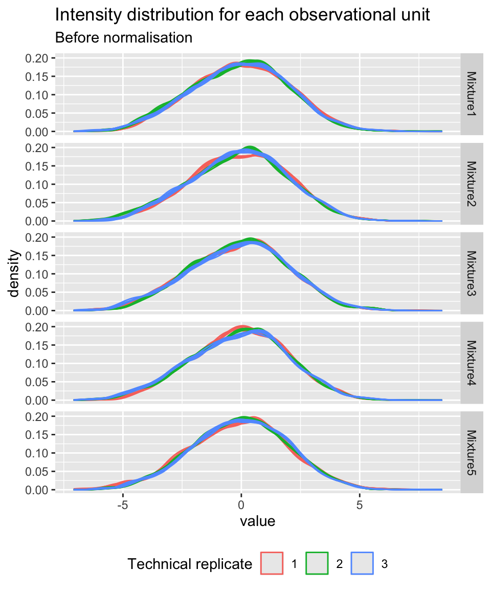
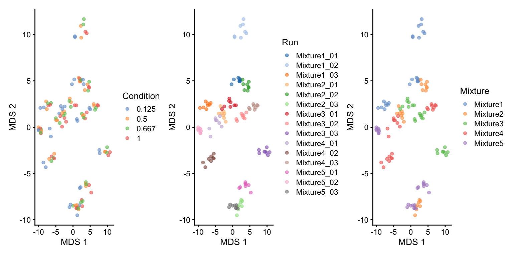
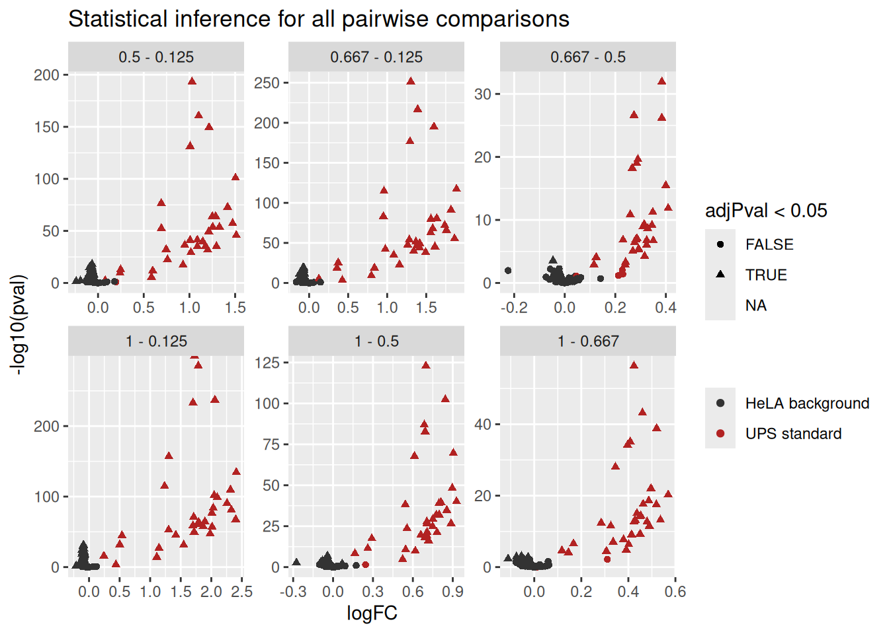
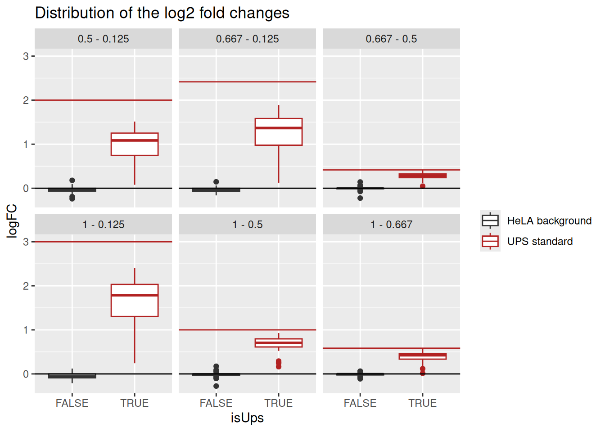

2 Advanced statistical analysis with msqrob2
This chapter builds upon the chapter with the basics of differential proteomics data analysis and provides more advanced concepts using msqrob2. To illustrate these advanced concepts, we will use the spike-in study published by Huang et al. (2020). We chose this data set because:
- Spike-in data contain ground truth information about which proteins are differentially abundant, enabling us to show the impact of different analysis strategies.
- It has been acquired with a TMT-labelling strategy that require a complex experimental design. This provides an excellent example to explain different sources of variability in an MS experiment and demonstrate the flexibility of
msqrob2to model these sources of variability.
2.1 Background
Labelling strategies in mass spectrometry (MS)-based proteomics enhance sample throughput by enabling the acquisition of multiple samples within a single run. The labelling strategy that allows the highest multiplexing is the tandem mass tag (TMT) labelling and will be the focus of the current tutorial.
2.1.1 TMT workflow
TMT-based workflow highly overlap with label-free workflows. However, TMT-based workflows have an additional sample preparation step, where the digested peptides from each sample are labelled with a TMT reagent and samples with different TMT reagents are pooled in a single TMT mixture1. The signal processing is also slightly affected since the quantification no longer occurs in the MS1 space but at the MS2 level. It is important to understand that TMT reagent are isobaric, meaning that the same peptide with different TMT labels will have the same mass for the intact ion, as recorded during MS1. However, the TMT fragments that are released upon fragmentation during MS2, also called TMT reporter ions, have label-specific masses. The TMT fragments have an expected mass and are distributed in a low-mass range of the MS2 space. The intensity of each TMT fragment is directly proportional to the peptide quantity in the original sample before pooling. The TMT fragment intensities measured during MS2 are used as quantitative data. The higher mass range contains the peptide fragments that compose the peptide fingerprint, similarly to LFQ. This data range is therefore used for peptide identification. Interestingly, the peptide fingerprint originates from the same peptide across multiple samples. This leads to a signal boost for low abundant peptides and hence should improve data sensitivity and consistency.
2.1.2 Challenges
The analysis of TMT-based proteomics data shares the same challenges as the data analysis challenges for LFQ. However, TMT workflows impose additional challenges:
- Contemporary experiments often involve increasingly complex designs, where the number of samples exceeds the capacity of a single TMT mixture, resulting in a complex correlation structure that must be addressed for accurate statistical inference. We will describe in the modelling section the different sources of variation.
- We also recommend modelling TMT data at the lowest level, that is at the peptide ion level, for optimal performance (Vandenbulcke et al. 2025). These ion-level models are more complex and include additional sources of variation instead of relying on the summarised protein values. We have shown for LFQ data that a two-step approach where data are first summarised (using a model-based method) and then modelled with
msqrob2leads to similar results, and hence provides more accessible models for non-specialised data analysts (Sticker et al. 2020).
2.1.3 Experimental context
The data set used in this chapter is a spike-in experiment (PXD0015258) published by Huang et al. (2020). It consists of controlled mixtures with known ground truth. UPS1 peptides at concentrations of 500, 333, 250, and 62.5 fmol were spiked into 50 g of SILAC HeLa peptides, each in duplicate. These concentrations form a dilution series of 1, 0.667, 0.5, and 0.125 relative to the highest UPS1 peptide amount (500 fmol). A reference sample was created by combining the diluted UPS1 peptide samples with 50g of SILAC HeLa peptides. All dilutions and the reference sample were prepared in duplicate, resulting in a total of ten samples. These samples were then treated with TMT10-plex reagents and combined before LC-MS/MS analysis. This protocol was repeated five times, each with three technical replicates, totaling 15 MS runs.
We will start from the PSM data generated by Skyline and infer protein-level differences between samples. To achieve this goal, we will apply an msqrob2TMT workflow, a data processing and modelling workflow dedicated to the analysis of TMT-based proteomics datasets. We will demonstrate how the workflow can highlight the spiked-in proteins. Before delving into the analysis, let us prepare our computational environment.
2.2 Load packages
We load the msqrob2 package, along with additional packages for data manipulation and visualisation.
library("msqrob2")
library("dplyr")
library("ggplot2")
library("patchwork")We also configure the parallelisation framework.
library("BiocParallel")
register(SerialParam())2.3 Data
2.3.1 File caching
The data have been deposited by the authors in the MSV000084264 MASSiVE repository, but we will retrieve the time stamped data from our Zenodo repository. We need 2 files: the Skyline identification and quantification table generated by the authors and the sample annotation files.
To facilitate management of the files, we download the required files using the BiocFileCache package. The package will set up a local database in a cache directory2. BiocFileCache() creates a connection to that database and bfcrpath() will query the database for the required URL. If that URL is not present in the database, the function will automatically download the URL target file and store it in the cache directory. If the URL is already present in the database, the function will retrieve the associated file from the local cache directory. This procedure ensures that the files are downloaded only once while providing a direct link to its source link. When these links point to permanent archives (like Zenodo) or large public databases (like PRIDE or MASSiVE), this approach promotes reproducible analyses.
The chunk below will take some time to complete the first time you run it as it needs to download the (large) file locally, but will fetch the local copy the following times.
library("BiocFileCache")
bfc <- BiocFileCache()
psmFile <- bfcrpath(bfc, "https://zenodo.org/records/14767905/files/spikein1_psms.txt?download=1")
annotFile <- bfcrpath(bfc, "https://zenodo.org/records/14767905/files/spikein1_annotations.csv?download=1")Now the files are downloaded, we can load the two tables.
2.3.2 PSM table
An MS experiment generates spectra. Each MS2 spectrum is used to infer the peptide identity using a search engine. When an observed spectrum is matched to a theoretical peptide spectrum, we have a peptide-to-spectrum match (PSM). The identification software compiles all the PSMs inside a table. Hence, the PSM data is the lowest possible level to perform data modelling.
Each row in the PSM data table contains information for one PSM (the table below shows the first 6 rows). The columns contains various information about the PSM, such as the peptide sequence and charge, the quantified value, the inferred protein group, the measured and predicted retention time and precursor mass, the score of the match, … In the case of Skyline TMT data, the quantification values are provides in multiple columns (start with "Abundance."), one for each TMT label. Regardless of TMT or LFQ experiments, the PSM table stacks the quantitative values from samples in different runs below each other. We must therefore split the table by run to ensure that every quantitative column contains data from a single sample. This is performed during the conversion to a QFeatures object.
psms <- read.delim(psmFile)
qcols <- grep("Abundance", colnames(psms), value = TRUE)| Checked | Confidence | Identifying.Node | PSM.Ambiguity | Annotated.Sequence | Modifications | Marked.as | X..Protein.Groups | X..Proteins | Master.Protein.Accessions | Master.Protein.Descriptions | Protein.Accessions | Protein.Descriptions | X..Missed.Cleavages | Charge | DeltaScore | DeltaCn | Rank | Search.Engine.Rank | m.z..Da. | MH…Da. | Theo..MH…Da. | DeltaM..ppm. | Deltam.z..Da. | Activation.Type | MS.Order | Isolation.Interference…. | Average.Reporter.S.N | Ion.Inject.Time..ms. | RT..min. | First.Scan | Spectrum.File | File.ID | Abundance..126 | Abundance..127N | Abundance..127C | Abundance..128N | Abundance..128C | Abundance..129N | Abundance..129C | Abundance..130N | Abundance..130C | Abundance..131 | Quan.Info | Ions.Score | Identity.Strict | Identity.Relaxed | Expectation.Value | Percolator.q.Value | Percolator.PEP |
|---|---|---|---|---|---|---|---|---|---|---|---|---|---|---|---|---|---|---|---|---|---|---|---|---|---|---|---|---|---|---|---|---|---|---|---|---|---|---|---|---|---|---|---|---|---|---|---|---|---|
| False | High | Mascot (O4) | Unambiguous | [K].gFQQILAGEYDHLPEQAFYMVGPIEEAVAk.[A] | N-Term(TMT6plex); K30(TMT6plex) | 1 | 1 | P06576 | ATP synthase subunit beta, mitochondrial OS=Homo sapiens GN=ATP5B PE=1 SV=3 | P06576 | ATP synthase subunit beta, mitochondrial OS=Homo sapiens GN=ATP5B PE=1 SV=3 | 0 | 3 | 1.0000 | 0 | 1 | 1 | 1270.3249 | 3808.960 | 3808.966 | -1.51 | -0.00192 | CID | MS2 | 47.955590 | 8.7 | 50.000 | 212.2487 | 112815 | 161117_SILAC_HeLa_UPS1_TMT10_Mixture1_03.raw | F1 | 2548.326 | 3231.929 | 2760.839 | 4111.639 | 3127.254 | 1874.163 | 2831.423 | 2298.401 | 3798.876 | 3739.067 | NA | 90 | 28 | 21 | 0.0000000 | 0 | 0.0000140 | |
| False | High | Mascot (K2) | Unambiguous | [R].qYPWGVAEVENGEHcDFTILr.[N] | N-Term(TMT6plex); C15(Carbamidomethyl); R21(Label:13C(6)15N(4)) | 1 | 1 | Q16181 | Septin-7 OS=Homo sapiens GN=SEPT7 PE=1 SV=2 | Q16181 | Septin-7 OS=Homo sapiens GN=SEPT7 PE=1 SV=2 | 0 | 3 | 1.0000 | 0 | 1 | 1 | 920.4493 | 2759.333 | 2759.332 | 0.31 | 0.00028 | CID | MS2 | 9.377507 | 8.1 | 3.242 | 164.7507 | 87392 | 161117_SILAC_HeLa_UPS1_TMT10_Mixture3_03.raw | F5 | 22861.765 | 25817.946 | 23349.498 | 29449.609 | 25995.929 | 22955.769 | 30578.971 | 30660.488 | 38728.853 | 25047.280 | NA | 76 | 24 | 17 | 0.0000001 | 0 | 0.0000003 | |
| False | High | Mascot (K2) | Unambiguous | [R].dkPSVEPVEEYDYEDLk.[E] | N-Term(TMT6plex); K2(Label); K17(Label) | 1 | 1 | Q9Y450 | HBS1-like protein OS=Homo sapiens GN=HBS1L PE=1 SV=1 | Q9Y450 | HBS1-like protein OS=Homo sapiens GN=HBS1L PE=1 SV=1 | 1 | 3 | 0.9730 | 0 | 1 | 1 | 920.1605 | 2758.467 | 2758.461 | 2.08 | 0.00192 | CID | MS2 | 38.317050 | 17.8 | 13.596 | 143.4534 | 74786 | 161117_SILAC_HeLa_UPS1_TMT10_Mixture3_03.raw | F5 | 25504.083 | 27740.450 | 25144.974 | 25754.579 | 29923.176 | 34097.637 | 31650.255 | 27632.692 | 23886.881 | 35331.092 | NA | 74 | 30 | 23 | 0.0000004 | 0 | 0.0000010 | |
| False | High | Mascot (F2) | Selected | [R].hEHQVMLmr.[Q] | N-Term(TMT6plex); M8(Oxidation); R9(Label:13C(6)15N(4)) | 1 | 1 | Q15233 | Non-POU domain-containing octamer-binding protein OS=Homo sapiens GN=NONO PE=1 SV=4 | Q15233 | Non-POU domain-containing octamer-binding protein OS=Homo sapiens GN=NONO PE=1 SV=4 | 0 | 4 | 0.5250 | 0 | 1 | 1 | 359.6898 | 1435.737 | 1435.738 | -0.04 | -0.00002 | CID | MS2 | 21.390040 | 36.5 | 50.000 | 21.6426 | 6458 | 161117_SILAC_HeLa_UPS1_TMT10_Mixture4_02.raw | F10 | 13493.228 | 14674.490 | 11187.900 | 12831.495 | 13839.426 | 12441.353 | 13450.885 | 14777.844 | 13039.995 | 12057.121 | NA | 40 | 25 | 18 | 0.0003351 | 0 | 0.0001175 | |
| False | High | Mascot (K2) | Unambiguous | [R].dNLTLWTADNAGEEGGEAPQEPQS.[-] | N-Term(TMT6plex) | 1 | 1 | P31947 | 14-3-3 protein sigma OS=Homo sapiens GN=SFN PE=1 SV=1 | P31947 | 14-3-3 protein sigma OS=Homo sapiens GN=SFN PE=1 SV=1 | 0 | 3 | 1.0000 | 0 | 1 | 1 | 920.0943 | 2758.268 | 2758.264 | 1.53 | 0.00141 | CID | MS2 | 0.000000 | 16.7 | 6.723 | 174.1863 | 92950 | 161117_SILAC_HeLa_UPS1_TMT10_Mixture3_03.raw | F5 | 64582.786 | 50576.417 | 47126.037 | 56285.129 | 46257.310 | 52634.885 | 49716.850 | 60660.574 | 55830.488 | 40280.577 | NA | 38 | 21 | 14 | 0.0002153 | 0 | 0.0000138 | |
| False | High | Mascot (K2) | Unambiguous | [R].aLVAIGTHDLDTLSGPFTYTAk.[R] | N-Term(TMT6plex); K22(Label) | 1 | 1 | Q9NSD9 | Phenylalanine–tRNA ligase beta subunit OS=Homo sapiens GN=FARSB PE=1 SV=3 | Q9NSD9 | Phenylalanine–tRNA ligase beta subunit OS=Homo sapiens GN=FARSB PE=1 SV=3 | 0 | 3 | 0.9783 | 0 | 1 | 1 | 919.8502 | 2757.536 | 2757.532 | 1.48 | 0.00136 | CID | MS2 | 30.619960 | 26.7 | 8.958 | 176.4863 | 94294 | 161117_SILAC_HeLa_UPS1_TMT10_Mixture3_03.raw | F5 | 35404.709 | 31905.852 | 30993.941 | 36854.351 | 37506.001 | 25703.444 | 38626.598 | 35447.942 | 33788.409 | 32031.516 | NA | 46 | 29 | 22 | 0.0002060 | 0 | 0.0000720 |
There is a peculiarity with the dataset: the spectra have been identified with 2 nodes. In one node, the authors searched the SwissProt database for proteins with static modifications related to the metabolic labelling, in the other node they searched the Sigma_UPS protein database without these static modifications. However, some spectra were identified by both nodes leading to duplicate PSMs. We here remove these duplicated PSMs that are identification artefacts.
duplicatesQuants <- duplicated(psms[, qcols]) | duplicated(psms[, qcols], fromLast = TRUE)
psms <- psms[!duplicatesQuants, ]We will also subset the data set to reduce computational costs. If you want to run the analysis on the full data set, you can skip this code chunk. The subsetting will keep all UPS proteins, known to be differentially abundant by experimental design, and we will keep 500 background proteins known to be unchanged across condition.
allProteins <- unique(psms$Protein.Accessions)
upsProteins <- grep("ups", allProteins, value = TRUE)
helaProteins <- grep("ups", allProteins, value = TRUE, invert = TRUE)
set.seed(1234)
keepProteins <- c(upsProteins, sample(helaProteins, 500))
psms <- psms[psms$Protein.Accessions %in% keepProteins, ]2.3.3 Sample annotation table
The purpose and structure of the sample annotation table is identical across proteomics experiments (see introduction to the sample annotation table). The annotation table used in this tutorial has been generated by the authors.
coldata <- read.csv(annotFile)We perform a little cleanup:
- We keep only the sample annotations that are meaningful to the experiment and that are not redundant with other annotations.
- We extract the run identifier from the MS file name (which we store as the
File.Nameannotation). - The TMT used for labelling each sample is stored in the
Channelcolumn. We however prefer to use the less esoteric termLabelfor more clarity with the main text when we’ll discuss labelling effects.
## 1.
coldata <- coldata[, c("Run", "Channel", "Condition", "Mixture", "TechRepMixture")]
## 2.
coldata$File.Name <- coldata$Run
coldata$Run <- sub("^.*(Mix.*).raw", "\\1", coldata$Run)
## 3.
colnames(coldata)[2] <- "Label"| Run | Label | Condition | Mixture | TechRepMixture | File.Name |
|---|---|---|---|---|---|
| Mixture1_01 | 126 | Norm | Mixture1 | 1 | 161117_SILAC_HeLa_UPS1_TMT10_Mixture1_01.raw |
| Mixture1_01 | 127N | 0.667 | Mixture1 | 1 | 161117_SILAC_HeLa_UPS1_TMT10_Mixture1_01.raw |
| Mixture1_01 | 127C | 0.125 | Mixture1 | 1 | 161117_SILAC_HeLa_UPS1_TMT10_Mixture1_01.raw |
| Mixture1_01 | 128N | 0.5 | Mixture1 | 1 | 161117_SILAC_HeLa_UPS1_TMT10_Mixture1_01.raw |
| Mixture1_01 | 128C | 1 | Mixture1 | 1 | 161117_SILAC_HeLa_UPS1_TMT10_Mixture1_01.raw |
| Mixture1_01 | 129N | 0.125 | Mixture1 | 1 | 161117_SILAC_HeLa_UPS1_TMT10_Mixture1_01.raw |
2.3.4 Convert to QFeatures
We use readQFeatures() to create a QFeatures object. Since we start from the PSM-level data, the approach is somewhat more elaborate3. First, recall that every quantitative column in the PSM table contains information for multiple runs. Therefore, the function split the table based on the run identifier, given by the runCol argument (for Skyline, that identifier is contained in Spectrum.File). So, the QFeatures object after import will contain as many sets as there are runs. Next, the function links the annotation table with the PSM data. To achieve this, the annotation table must contain a runCol column that provides the run identifier in which each sample has been acquired, and this information will be used to match the identifiers in the Spectrum.File column of the PSM table. The annotation table must also contain a quantCols column that tells the function which column in the PSM table contains the quantitative information for a given sample. In this case, the quantCols depend on
coldata$runCol <- coldata$File.Name
coldata$quantCols <- paste0("Abundance..", coldata$Label)
(spikein <- readQFeatures(
psms, colData = coldata,
runCol = "Spectrum.File",
quantCols = qcols
))An instance of class QFeatures (type: bulk) with 15 sets:
[1] 161117_SILAC_HeLa_UPS1_TMT10_Mixture1_01.raw: SummarizedExperiment with 1905 rows and 10 columns
[2] 161117_SILAC_HeLa_UPS1_TMT10_Mixture1_02.raw: SummarizedExperiment with 1902 rows and 10 columns
[3] 161117_SILAC_HeLa_UPS1_TMT10_Mixture1_03.raw: SummarizedExperiment with 1952 rows and 10 columns
...
[13] 161117_SILAC_HeLa_UPS1_TMT10_Mixture5_01.raw: SummarizedExperiment with 1919 rows and 10 columns
[14] 161117_SILAC_HeLa_UPS1_TMT10_Mixture5_02.raw: SummarizedExperiment with 1909 rows and 10 columns
[15] 161117_SILAC_HeLa_UPS1_TMT10_Mixture5_03.raw: SummarizedExperiment with 1844 rows and 10 columns We now have a QFeatures object with 15 sets, each containing data associated with an MS run. The name of each set is defined by the name of the corresponding file name of the run, which is unnecessarily long. We simplify the set names, although this step is optional and only meant to improve the clarity of the output.
## This is optional
names(spikein) <- sub("^.*(Mix.*).raw", "\\1", names(spikein))
(inputNames <- names(spikein)) [1] "Mixture1_01" "Mixture1_02" "Mixture1_03" "Mixture2_01" "Mixture2_02"
[6] "Mixture2_03" "Mixture3_01" "Mixture3_02" "Mixture3_03" "Mixture4_01"
[11] "Mixture4_02" "Mixture4_03" "Mixture5_01" "Mixture5_02" "Mixture5_03"2.4 Data preprocessing
Similar to the basic concepts chapter, we will use the QFeatures’ data preprocessing functionality. The data preprocessing workflow for TMT data is similar to the workflow for LFQ data, but there are subtle differences associated with the fact that we start from PSM-level data, namely the PSM filtering is mode complex and the data preprocessing will be applied for each run separately to remove part of the run effect.
2.4.1 Encoding missing values
Any zero value needs to be encoded by a missing value.
spikein <- zeroIsNA(spikein, inputNames)2.4.2 Log2 transformation
Similar to any MS-based proteomics data, TMT data are heteroskedastic, with a strong mean-variance relationship. This is illustrated by the intensities and log2-intensities for one of the peptide ions, the triply charged DLLHVLAFSK, in function of the UPS spike-in dilution factor.

Log2-transformation solves the heteroskedasticity issue, but also provides a scale that directly relates to biological interpretation (see the basic concepts chapter). We perform log2-transformation with logTransform() from the QFeatures package.
logNames <- paste0(inputNames, "_log")
spikein <- logTransform(
spikein, inputNames, name = logNames, base = 2
)2.4.3 Sample filtering
We first remove the reference samples. These samples were used by the MSstatsTMT authors to obtain normalisation factors (Huang et al. 2020). However, this approach ignores the uncertainty associated with the measurement with these reference samples, potentially inflating the noise in the samples of interest. Hence, msqrob2 workflows do not use reference normalisation. In practice, we found no impact on model performance (Vandenbulcke et al. 2025), hence we favor a more parsimonious approach. The information is available from the colData, under the Condition column. We remove any sample that is marked as Norm using subsetByColData().
spikein <- subsetByColData(spikein, spikein$Condition != "Norm")2.4.4 PSM filtering
Filtering removes low-quality and unreliable PSMs that would otherwise introduce noise and artefacts in the data. Conceptually, PSM filtering is identical to peptide filtering, but we will here apply filtering criteria for which some are not readily available in the data. Therefore, we will add custom filtering variable to the rowData that will then be used with filterFeatures(). This provides an ideal use case to demonstrate the customisation of a filtering workflow.
Remove ambiguous identifications
The background proteins originate from HeLa cells, which also contain UPS proteins. The background UPS proteins and the spiked-in UPS proteins differ in metabolic labelling, so we should be able to distinguish them. We used the PSM-level data searched with mascot, as provided by the MSstatsTMT authors who used two mascot identification nodes. In one node they searched the SwissProt database for proteins with static modifications related to the metabolic labelling, in the other node they searched the Sigma_UPS protein database without these static modifications. Ideally, this should separate the spiked-in UPS proteins and the UPS proteins from the HeLa cells, however, this is not always the case. The SwissProt search is expected to return peptide-spectrum matches (PSMs) for all proteins, including non-UPS HeLa, UPS HeLa, and spike-in UPS proteins. Conversely, the Sigma_UPS search is expected to return PSMs exclusively for spike-in UPS proteins. However, a PSM that matches a UPS protein in the SwissProt search but is not identified as such in the Sigma_UPS search could either correctly originate from a HeLa protein or represent a spiked-in UPS protein that was not recognised as such in the Sigma_UPS search. Additionally, there are ambiguous PSMs that are not matched to a UPS protein in the HeLa search but are matched to a UPS protein in the SwissProt search. To address this, we exclude these ambiguous proteins from the analysis.
To define the amibiguous PSMs, we retrieve the PSM annotations from the rowData and create a new colum indicating whether a PSM belongs to a UPS protein or not, based on the protein SwissProt identifiers. For this, we apply a custom filtering worklow:
- Collect data: combine all the
rowDatainformation in a single table. We will apply the filter on the
rowdata <- rbindRowData(spikein, logNames)- Compute new variable: (2a) define whether the PSM’s protein group is a UPS protein and then (2b) define an ambiguous PSM as a PSM that is marked as UPS by the SwissProt identifier but not by the Sigma_UPS node (
Marked.ascolumn), and inversely.
## 2a.
rowdata$isUps <- "no"
isUpsProtein <- grepl("ups", rowdata$Protein.Accessions)
rowdata$isUps[isUpsProtein] <- "yes"
## 2b.
rowdata$isUps[!isUpsProtein & grepl("UPS", rowdata$Marked.as)] <- "amb"
rowdata$isUps[isUpsProtein & !grepl("UPS", rowdata$Marked.as)] <- "amb"- Reinsert in the rowData: insert the modified table with new information back in the
rowDataof the different sets. This means that the single table withrowDatainformation needs to be split by each set.split()will produce a named list of tables and each table will be iteratively inserted asrowDataof the set.
rowData(spikein) <- split(rowdata, rowdata$assay)- Apply the filter: the filtering is performed by
filterFeatures()using the new information from therowData. We specifykeep = TRUEbecause the input sets (before log-transformation) do not contain the filtering variable, so we tell the function to keep all PSMs for the sets that don’t have the variableisUps.
spikein <- filterFeatures(spikein, ~ isUps != "amb", keep = TRUE)Remove failed protein inference
Next, we remove PSMs that could not be mapped to a protein or that map to multiple proteins, i.e. a protein group. For the latter, the protein identifier contains multiple identifiers separated by a ;). This information is readily available in the rowData, so there is no need for a custom filtering.
spikein <- filterFeatures(
spikein, ~ Protein.Accessions != "" & ## Remove failed protein inference
!grepl(";", Protein.Accessions)) ## Remove protein groupsRemove inconsistent protein inference
We also remove peptide ions that map to a different protein depending on the run. Again, this requires a custom filtering and we apply the same filtering workflow as above.
## 1. Collect data
rowdata <- rbindRowData(spikein, logNames)
## 2. Compute new variable
rowdata <- data.frame(rowdata) |>
group_by(Annotated.Sequence, Charge) |>
mutate(nProtsMapped = length(unique(Protein.Accessions)))
## 3. Reinsert in the rowData
rowData(spikein) <- split(rowdata, rowdata$assay)
## 4. Apply the filter
spikein <- filterFeatures(spikein, ~ nProtsMapped == 1, keep = TRUE)Remove one-run wonders
We also remove proteins that can only be found in one run as such proteins may not be trustworthy. In this case,
## 1. Collect data
rowdata <- rbindRowData(spikein, logNames)
## 2. Compute new variable
rowdata <- data.frame(rowdata) |>
group_by(Protein.Accessions) |>
mutate(nRuns = length(unique(assay)))
## 3. Reinsert in the rowData
rowData(spikein) <- split(rowdata, rowdata$assay)
## 4. Apply the filter
spikein <- filterFeatures(spikein, ~ nRuns > 1, keep = TRUE)Remove duplicated PSMs
Finally, peptide ions that were identified with multiple PSMs in a run are collapsed to the PSM with the highest summed intensity over the TMT labels, a strategy that is also used by MSstats.
This filtering requires a more complex workflow because it mixes information from the rowData (to obtain ion identities) with quantitative data (to obtain PSM intensity ranks). We therefore compute the filtering variable for every set iteratively:
- Get the
rowDatafor the current set. - Make a new variable
ionID. - We calculate the
rowSumsfor each ion. - Make a new variable
psmRankthat ranks the PSMs for each ion identifier based on the summed intensity. - We store the new information back in the
rowData.
for (i in logNames) { ## for each set of interest
rowdata <- rowData(spikein[[i]]) ## 1.
rowdata$ionID <- paste0(rowdata$Annotated.Sequence, rowdata$Charge) ## 2.
rowdata$rowSums <- rowSums(assay(spikein[[i]]), na.rm = TRUE) ## 3.
rowdata <- data.frame(rowdata) |>
group_by(ionID) |>
mutate(psmRank = rank(-rowSums)) ## 4.
rowData(spikein[[i]]) <- DataFrame(rowdata) ## 5.
}For each ion that maps to multiple PSMs, we keep the PSM with the highest summed intensity, that is that ranks first.
spikein <- filterFeatures(spikein, ~ psmRank == 1, keep = TRUE)Remove highly missing PSMs
We then remove PSMs with five or more missing values out of the ten TMT labels (>= 50%). This is an arbitrary value that may need to be adjusted depending on the experiment and the data set.
spikein <- filterNA(spikein, logNames, pNA = 0.5)Filtering wrap-up
We have demonstrated the different procedures to perform feature filtering. Here is a summary (from simple to complex):
- If you want to filter on missing values, use
filterNA(). - If you want to filter based on a
rowDatacolumn, usefilterFeatures(). - If you want to filter based on information that needs to be built from
rowDatainformation, use the following workflow: i. collect therowDatain a table; ii. compute the new variable; iii. reinsert the updated table in therowData; iv. apply the filter withfilterFeatures(). - If you want to filter based on
rowDataand quantitative information, iterate the following workflow over each set:- Get the
rowDatafor the current set; ii. Compute the filtering variable based onrowDataand/or quantitative information; iii. store the new information back in therowData. Then, the filtering can be performed byfilterFeatures().
- Get the
When using filterFeatures(), specify keep = TRUE to select all features for which a custom variable is not available or has not been computed. By default, the function will remove all the feature of a set for which the information is not available.
These standard and custom filtering procedures have been demonstrated on PSM-level data, but the same procedures can be performed at any data level, e.g. also at peptide or protein level.
2.4.5 Normalisation
Before performing normalisation, we explore the systematic shifts across the samples (using the pipeline described in the previous chapter). To facilitate interpretation, we facet the data by TMT mixture.
spikein[, , logNames] |>
longForm(colvars = c("Mixture", "TechRepMixture")) |>
data.frame() |>
ggplot() +
aes(x = value, colour = as.factor(TechRepMixture), group = colname) +
geom_density() +
labs(title = "Intensity distribution for each observational unit",
subtitle = "Before normalisation",
colour = "Technical replicate") +
facet_grid(Mixture ~ .) +
theme(legend.position = "bottom")
Similarly to the previous chapter, we again observe misalignments of the intensity distributions across samples. We see the intensity distributions cluster by technical replicate. Since each replicate contains all experimental conditions, we know that these difference stem from technical variability and not biological variability. We normalise the data by median centering.
normNames <- paste0(inputNames, "_norm")
spikein <- normalize(
spikein, logNames, name = normNames,
method = "center.median"
)TODO think about using the Median of Ratio normalisation for tmt data.
And we confirm that the normalisation resulted in a better alignment of the intensity distribution across samples.
spikein[, , normNames] |>
longForm(colvars = c("Mixture", "TechRepMixture")) |>
data.frame() |>
ggplot() +
aes(x = value, colour = as.factor(TechRepMixture), group = colname) +
geom_density() +
labs(title = "Intensity distribution for each observational unit",
subtitle = "Before normalisation",
colour = "Technical replicate") +
facet_grid(Mixture ~ .) +
theme(legend.position = "bottom")
Up to now, the data from different runs were kept in separate assays. We can now join the normalised sets into an ions set using joinAssays(). Sets are joined by stacking the columns (samples) in a matrix and rows (features) are matched according to a row identifier, here the ionID from the rowData.
(spikein <- joinAssays(
spikein, normNames, fcol = "ionID", name = "ions"
))An instance of class QFeatures (type: bulk) with 46 sets:
[1] Mixture1_01: SummarizedExperiment with 1719 rows and 8 columns
[2] Mixture1_02: SummarizedExperiment with 1722 rows and 8 columns
[3] Mixture1_03: SummarizedExperiment with 1776 rows and 8 columns
...
[44] Mixture5_02_norm: SummarizedExperiment with 1646 rows and 8 columns
[45] Mixture5_03_norm: SummarizedExperiment with 1578 rows and 8 columns
[46] ions: SummarizedExperiment with 4066 rows and 120 columns We have a new set contain 15 runs \(\times\) 8 labelled sample = 120 data columns. Note that the 15 sets have 4066 ions in common, leading to a joined set with r nrows(spikein)[["ions"]] rows.
If we want to use protein-level data for modelling, we will need a summarisation step. Note that this last step is optional.
2.4.6 Summarisation
While this chapter will focus on ion-level data modelling, modelling of protein-level data is possible upon summarisation. Below, we illustrate the challenges of summarising TMT data using one of the UPS proteins in Mixture 1 (separating the data for each technical replicate). We also focus on the 0.125x and the 1x spike-in conditions. We illustrate the different peptide ions on the x axis and plot the log2 normalised intensities across samples on y axis. All the points belonging to the same sample are linked through a grey line.

We see that the same challenges observed for LFQ data also apply to TMT data. Briefly:
- Data for a protein can consist of many peptide ions.
- Peptide ions have different intensity baselines.
- There is strong missingness across runs (compare points between replicates), but the missingness is mitigated within runs (compare points within replicates4).
- Subtle intensity shifts for the same peptide across different replicates, called spectrum effects, are caused by small run-to-run fluctuations.
- Presence of outliers. For instance, the first peptide ion doesn’t show the same change in intensity between conditions compared to majority of the peptides.
TODO: use robust summary instead of median polish for consistency with previous vignette? I known median polish is faster, but still?
Here, we summarise the ion-level data into protein intensities through the median polish approach, which alternately removes the peptide-ions and the sample medians from the data until the summaries stabilise. Removing the peptide-ion medians will solve issue 2. as it removes the ion-specific effects. Using the median instead of the mean will solve issue 5. Note that we perform summarisation for each run separately, hence the ion effect will be different for each run, effectively allowing for a spectrum effect and solving issue 4.
summNames <- paste0(inputNames, "_proteins")
(spikein <- aggregateFeatures(
spikein, i = normNames, name = summNames,
fcol = "Protein.Accessions", fun = MsCoreUtils::medianPolish,
na.rm = TRUE
))An instance of class QFeatures (type: bulk) with 61 sets:
[1] Mixture1_01: SummarizedExperiment with 1719 rows and 8 columns
[2] Mixture1_02: SummarizedExperiment with 1722 rows and 8 columns
[3] Mixture1_03: SummarizedExperiment with 1776 rows and 8 columns
...
[59] Mixture5_01_proteins: SummarizedExperiment with 307 rows and 8 columns
[60] Mixture5_02_proteins: SummarizedExperiment with 296 rows and 8 columns
[61] Mixture5_03_proteins: SummarizedExperiment with 299 rows and 8 columns We can now join the different protein sets into a single set. We omit the fcol argument, meaning that the set rows will be matched based on the row names (generated by aggregateFeatures()).
spikein <- joinAssays(
spikein, summNames, "proteins"
)2.5 Data exploration
We perform data exploration using MDS, using the same pipeline as in the previous chapter.
library("scater")
se <- getWithColData(spikein, "ions")
se <- runMDS(as(se, "SingleCellExperiment"), exprs_values = 1)
plotMDS(se, colour_by = "Condition") +
plotMDS(se, colour_by = "Run") +
plotMDS(se, colour_by = "Mixture")
There is a strong run-to-run effect, which is partly explained by a mixture effect as the runs from the same mixture tend to be closer than runs from different mixtures. The condition effect is much more subtle to find, probably because we know only a few UPS proteins were spiked in while the majority of the background proteins are unchanged.
As discussed above, the median polish summarisation should remove part of the run to run effect. We repeat the data exploration, but using the protein-level data.
se <- getWithColData(spikein, "proteins")
se <- runMDS(as(se, "SingleCellExperiment"), exprs_values = 1)
plotMDS(se, colour_by = "Condition") +
plotMDS(se, colour_by = "Run") +
plotMDS(se, colour_by = "Mixture")
While the run effects are smaller (i.e. points within a run are more scattered than on the previous plots) on the protein-level MDS compared to the ion-level MDS (the samples are less clustered per run), we can see that normalisation and summarisation alone are not sufficient to correct for these unwanted effects. We will take care of these effects during the data modelling.
2.6 Data modelling
Proteomics data contain several sources of variation that need to be accounted for by the model. Before delving into these sources of variation, we here show how to run the model that accounts for all relevant sources of variation in the spike-in experiment, which we have shown performs best (Vandenbulcke et al. 2025).
spikein <- msqrobAggregate(
spikein, i = "ions",
formula = ~ Condition + ## fixed effect for experimental condition
(1 | Label) + ## random effect for label
(1 | Mixture) + ## random effect for mixture
(1 | Run) + ## random effect for run
(1 | Run:Label) + ## random effect for PSMs for the same protein in a label of a run
(1 | Run:ionID), ## random effect for ions in the same spectrum of an MS run
fcol = "Protein.Accessions",
modelColumnName = "msqrob_psms_rrilm",
robust = TRUE, ridge = TRUE
)We will now build the model by progressively adding the different sources of variation.
2.6.1 Effect of treatment of interest
We model the source of variation induced by the experimental treatment of interest as a fixed effect, which we consider non-random, i.e. the treatment effect is assumed to be the same in repeated experiments, but it is unknown and has to be estimated. When modelling a typical label-free experiment at the protein level, the model boils down to a linear model, again we suppress the index for protein:
\[ y_i = \mathbf{x}^T_i \boldsymbol{\beta} + \epsilon_i, \]
with \(y_i\) the \(\log_2\)-normalised protein intensities in sample \(i\) out of \(N\) samples; \(\mathbf{x}_i\) a vector with the covariate pattern for the sample in run \(r\) encoding the intercept, treatment, potential batch effects and confounders; \(\boldsymbol{\beta}\) the vector of parameters that model the association between the covariates and the outcome; and \(\epsilon_i\) the residuals reflecting variation that is not captured by the fixed effects. Note that \(\mathbf{x}_i\) allows for a flexible parameterisation of the treatment beyond a single covariate, i.e. including a 1 for the intercept, continuous and categorical variables as well as their interactions. For all models considered in this work, we assume the residuals to be independent and identically distributed (i.i.d) according to a normal distribution with zero mean and constant variance, i.e. \(\epsilon_{i} \sim N(0,\sigma_\epsilon^2)\), that can differ from protein to protein.
We could estimate this model from the data using msqrob() (described in the previous chapter), i.e. the model translates into the following code:
# spikein <- msqrob(
# spikein, i = "proteins",
# formula = ~ Condition, ## fixed effect for experimental condition
# robust = TRUE, ridge = TRUE
# )This model, however, does not model all sources of variation in the experiment and relying on its results would lead to incorrect conclusions. We therefore did not run the modelling command and will expand the model.
2.6.2 Effect of run
As label-free experiments contain only a single sample per run, run-specific effects will be absorbed in the residuals. However, the data analysis of multiplexed experiments involving multiple MS runs has to account for run-specific effects, explicitly. If all treatments are present in each run, then the model parameters can be estimated using fixed run effects. Indeed, for these designs run acts as a blocking variable as all treatment effects can be estimated within each run.
However, for more complex designs this is no longer possible and the uncertainty in the estimation of the mean model parameters can involve both within and between run variability. For these designs we can resort to mixed models where the run effect is modelled using random effects, i.e. they are considered as a random sample from the population of all possible runs, which are assumed to be i.i.d normally distributed with mean 0 and constant variance, \(u_{run} \sim N(0,\sigma^2_\text{run})\). The use of random effects thus models the correlation in the data, explicitly. Indeed, protein intensities that are measured within the same run will be more similar than protein intensities between runs.
Hence, the model is extended to:
\[ y_{i} = \mathbf{x}^T_{i} \boldsymbol{\beta} + u_r^\text{run} + \epsilon_{i} \] with \(y_{i}\) the normalised \(\log_2\) protein intensities measured in sample \(i\) that has been acquired in run \(r\) out of \(R\) runs, and \(u_r^\text{run}\) the effect introduced by run \(r\).
We can also write the model in matrix form:
\[ \mathbf{Y} = \mathbf{X}\boldsymbol{\beta} + \mathbf{Zu}^\text{run} + \boldsymbol{\epsilon} \] with \[ \mathbf{Y}=\left[ \begin{array}{c} y_{1} \\\vdots\\ y_{i} \\\vdots\\ y_{N}\end{array} \right], \mathbf{X}=\left[ \begin{array}{cccc} 1 & x_{1,1} & \ldots & x_{1,P} \\ \vdots & \vdots & & \vdots \\ 1 & x_{i,1} & \ldots & x_{i,P} \\ \vdots & \vdots & & \vdots \\ 1 & x_{N,1} & \ldots & x_{N,P} \end{array} \right], \boldsymbol{\beta}=\left[ \begin{array}{c} \beta_0 \\ \beta_1 \\ \vdots \\ \beta_P \end{array} \right], \mathbf{Z}=\left[ \begin{array}{ccc}z_{1,1}&\ldots&z_{1, R}\\\vdots&&\vdots\\z_{N,1}&\ldots&z_{N,R}\end{array} \right], \mathbf{u}^\text{run}=\left[ \begin{array}{c} u^\text{run}_1 \\\vdots\\ u^\text{run}_{r} \\\vdots\\ u^\text{run}_{R}\end{array} \right] \]
Hence, with the mixed model, the variance covariance matrix of the intensities becomes
\[ \begin{array}{rcl} \boldsymbol{\Sigma}_\mathbf{Y} &=& \text{var}\left(\mathbf{Y}\right) \\ &=& \text{var}\left(\mathbf{X}\boldsymbol{\beta} + \mathbf{Zu} + \boldsymbol{\epsilon}\right) \\ &=& \mathbf{Z}\text{var}\left(\mathbf{u}\right)\mathbf{Z}^T + \mathbf{I}\sigma_\epsilon^2\\ &=& \mathbf{Z}\mathbf{Z}^T\sigma^2_\text{run} + \mathbf{I}\sigma_\epsilon^2 \end{array} \]
So, we see that the correlation of the data from the same run are correctly addressed and that the data from distinct runs are assumed to be independent. Hence, the variance-covariance matrix of \(\mathbf{Y}\) has a block diagonal structure, with as variance \(\sigma^2_\text{run} + \sigma_\epsilon^2\) and the covariance between intensities from the same run equals \(\sigma^2_\text{run}\). Suppose every run contains three samples, then
\[ \boldsymbol{\Sigma}_\mathbf{Y} = \left[ \begin{array}{cccccccccc}\sigma^2_\text{run}+\sigma^2_\epsilon&\sigma^2_\text{run}&\sigma^2_\text{run}&0&0&0&\ldots&0&0&0\\ \sigma^2_\text{run}&\sigma^2_\text{run}+\sigma^2_\epsilon&\sigma^2_\text{run}&0&0&0&\ldots&0&0&0\\ \sigma^2_\text{run}&\sigma^2_\text{run}&\sigma^2_\text{run}+\sigma^2_\epsilon&0&0&0&\ldots&0&0&0\\ 0&0&0&\sigma^2_\text{run}+\sigma^2_\epsilon&\sigma^2_\text{run}&\sigma^2_\text{run}&\ldots&0&0&0\\ 0&0&0&\sigma^2_\text{run}&\sigma^2_\text{run}+\sigma^2_\epsilon&\sigma^2_\text{run}&\ldots&0&0&0\\ 0&0&0&\sigma^2_\text{run}&\sigma^2_\text{run}&\sigma^2_\text{run}+\sigma^2_\epsilon&\ldots&0&0&0\\ \ldots & \ldots & \ldots & \ldots & \ldots & \ldots & \ldots & \ldots & \ldots & \ldots \\ 0&0&0&0&0&0&\dots&\sigma^2_\text{run}+\sigma^2_\epsilon&\sigma^2_\text{run}&\sigma^2_u\\ 0&0&0&0&0&0&\dots&\sigma^2_\text{run}&\sigma^2_\text{run}+\sigma^2_\epsilon&\sigma^2_\text{run}\\ 0&0&0&0&0&0&\dots&\sigma^2_\text{run}&\sigma^2_\text{run}&\sigma^2_\text{run}+\sigma^2_\epsilon\\ \end{array}\right] \]
This translates in the following code:
# spikein <- msqrob(
# spikein, i = "proteins",
# formula = ~ Condition + ## fixed effect for experimental condition
# (1 | Run), ## random effect for MS run
# robust = TRUE, ridge = TRUE
# )This model is still incomplete and is not executed as we still need to account that multiple samples are acquired within the same run thanks to TMT labelling.
2.6.3 Effect of TMT label
Acquiring multiple samples in a single run is possible because the peptides from each samples are labelled with chemical tags5. Peptide labelling can introduce label-specific effects that also need to be modelled. In principle, the effect of adding a chemical label to a peptide should be reproducible from experiment to experiment, and hence could be modelled using a fixed effect (given that TMT label swaps are performed so as to avoid confounding between label and treatment). However, TMT aliquotes contain impurities during production and these impurities may lead to unreproducible effects. Hence, we also include a random effect to account for labelling effects, i.e. \(u^\text{label}_l \sim N(0, \sigma^{2,\text{label}})\). The model thus extends to:
\[ y_{rl} = \mathbf{x}^T_{rl} \boldsymbol{\beta} + u_r^\text{run} + u_l^\text{label} + \epsilon_{rlm} \] with \(y_{rl}\) the normalised \(\log_2\) protein intensities in run \(r\), labelled with TMT \(l\), \(u_l^\text{label}\) the effect introduced by label \(l\). Note that the \(rl\) indexing is similar to the previous \(i\) indexing, but we now explicitly define the observational unit as the sample that has been measured in run \(r\) and labelled with label \(l\).
Specifying label as a random effect translates in the following code:
# spikein <- msqrob(
# spikein, i = "proteins",
# formula = ~ Condition + ## fixed effect for experimental condition
# (1 | Run) + ## random effect for MS run
# (1 | Label), ## random effect for label
# robust = TRUE, ridge = TRUE
# )This model is still incomplete and is not executed as we still need to account that each mixture has been replicated three times.
2.6.4 Effect of replication
Some experiments also include technical replication where a TMT mixture can be acquired multiple times. This again will induce correlation. Indeed, protein intensities from the same mixture will be more alike than those of different mixtures. Hence, we also include a random effect to account for this pseudo-replication, i.e. \(u^\text{mix}_m \sim N(0, \sigma^{2,\text{mix}})\). The model thus extends to:
\[ y_{rlm} = \mathbf{x}^T_{rlm} \boldsymbol{\beta} + u_r^\text{run} + u_l^\text{label} + u_m^\text{mix} + \epsilon_{rlm} \]
with \(y_{rm}\) the normalised \(\log_2\) protein intensities in run \(r\) with label \(l\) in mixture \(m\), \(u_m^\text{mix}\) the effect introduced by mixture \(m\).
The model translates to the following code:
spikein <- msqrob(
spikein, i = "proteins",
formula = ~ Condition + ## fixed effect for experimental condition
(1 | Run) + ## random effect for MS run
(1 | Label) + ## random effect for label
(1 | Mixture), ## random effect for mixture
robust = TRUE, ridge = TRUE,
overwrite = TRUE
)This model provides a sensible representation of the sources of variation in the data if we were to model the data at the protein level. This time, we executed the code and will use the result in a later section. However, we found that modelling protein-level effects from ion-level data leads to improved performance (Vandenbulcke et al. 2025). This will require an additional model expansion.
2.6.5 Ion-level modelling
Estimating the treatment effect from ion-level data will again induce additional levels of correlation. Indeed, the intensities for the different reporter ions in a TMT run within the same spectrum (PSM) will be more similar than the intensities between PSMs. We therefore need to add a random effect term to account for the within PSM correlation structure, i.e. \(u^\text{PSM}_{rp} \sim N(0,\sigma^{2,\text{PSM}})\). Moreover, in each label of a run multiple PSM intensities are picked up for each protein. Hence, intensities from different PSMs for a protein in the same label of a run will be more alike than intensities of different PSMs for the same protein between labels of runs, and we will address this correlation with a label-specific random effect nested in run, i.e. \(u_{rl}^{label} \sim N(0,\sigma^{2,\text{label}})\). The model then becomes:
\[ y_{rlmp} = \mathbf{x}^T_{rlmp} \beta + u_r^\text{run} + u_{l}^\text{label} + u_m^\text{mix} + u_{rl}^\text{label} + u_{rp}^\text{PSM} + \epsilon_{rlmp} \] with \(y_{rlmp}\) the \(\log_2\)-normalised PSM intensities for run \(r\) with label \(l\) in mixture \(m\) and peptide ion \(p\). Note, that the peptide ion random effect is also nested within each run since each spectrum is described by run-specific characteristics.
msqrobAggregate()enables the fitting of an ion-level model to obtain protein-level estimates. The function behaves similarly to msqrob() and shares most of the arguments. The notable difference is the fcol argument that tells the function how to group the ion-level data into protein-level data. Here, we will group ions by the Protein.Accessions. The results will be stored in a new protein-level set, which we call proteins_msqrob. msqrobAggregate() will fetch annotations from the colData (i.e. "Condition", "Label", "Run", "Mixture"), but contrarily to msqrob(), it can also fetch anntations from the rowData (i.e. "ionID").
spikein <- msqrobAggregate(
spikein, i = "ions",
formula = ~ Condition + ## fixed effect for experimental condition
(1 | Label) + ## random effect for label
(1 | Run) + ## random effect for Run
(1 | Mixture) + ## random effect for mixture
(1 | Run:Label) + ## random effect for label nested in run
(1 | Run:ionID), ## random effect for ion nested in run
fcol = "Protein.Accessions",
name = "proteins_msqrob",
robust = TRUE, ridge = TRUE
)So, we built the model shown at the beginning of this section, effectively accounting for all sources of variation in TMT-based proteomics data.
2.6.6 Why robust regression?
Throughout this book, we estimate the model parameters using robust regression through M-estimation (robust = TRUE). This class of estimation does not need the assumption that the residuals \(\epsilon\) are normally distributed. However, if the residuals are normal, the M-estimators have a high efficiency.
In ordinary least squares (OLS), the loss function that is minimised is:
\[ \sum\limits_{i = 1}^n \left(y_i - \mathbf{x}_i^T \boldsymbol{\beta}\right)^2 \]
While the M-estimation minimises the following loss function:
\[ \sum\limits_{i = 1}^n \rho \left(y_i - \mathbf{x}_i^T \boldsymbol{\beta}\right) \]
where \(\rho(z)\) is a symmetric function with a minimum at \(\rho(0) =
0\) and increases as \(|z|\) increases. So the robust regression through M-estimation minimises the maximal bias of the estimators as the derivative of \(\rho\) is bounded. A popular function for robust regression (and which is used by msqrob2) is the Huber function:
\[ \rho(e) = \left\{ \begin{array}{cl} e^2 / 2, & \text{if}\ |e| \leq k \\ k (|e| - k/2), & \text{if}\ |e| \gt k \\ \end{array} \right. \] where \(k\) is a tuning constant (defaults to \(k = 1.345\))
The estimation is performed using iteratively reweighted least square, i.e.
\[ \sum\limits_{i = 1}^n w_i\left(y_i - \mathbf{x}_i^T \boldsymbol{\beta}\right)^2 \] where the weigths \(w_i\) for each iteration are defined for each data point using the function :
\[ w(e) = \left\{ \begin{array}{cl} 1, & \text{if}\ |e| \leq k \\ \frac{k}{|e|}, & \text{if}\ |e| \gt k \\ \end{array} \right. \]
Intuitively, observations for which the fitting error (absolute residual) is smaller than the constant \(k\) will contribute contribute to the fitting as for the OLS, while the contribution of the remaining observations will decrease linearly as the error exceeds \(k\). This means that a strong outlier, i.e. an observation for which the fitting error is large, will barely contribute to the fit. Since the last iteration upon covergence is still a weighted least square estimation, we can use the same statistical testing framework as for OLS, although the tests and confidence intervals are based on asymptotic theory.
Note, that robust regression also extends to linear mixed models, by adopting weighted maximum likelihood e.g. TODO ref https://www.tandfonline.com/doi/abs/10.1080/03610920802677216.
2.6.7 Why ridge regression?
msqrob2 also allows for ridge regression (when ridge = TRUE). In ridge regression, model parameters are estimated by minimising a penalised version of the OLS loss:
\[ \sum\limits_{i = 1}^n \left(y_i - \mathbf{x}_i^T \boldsymbol{\beta}\right)^2 + \lambda \boldsymbol{\beta}^T\mathbf{D}\boldsymbol{\beta}, \] with \(\mathbf{D}\) a diagonal matrix that include a 1 on the diagonal elements for the model parameters that are penalised and a 0 otherwise.
Note, that in msqrob2 we leave the intercept \(\beta_0\) unpenalised so the first diagonal element of \(\mathbf{D}\) is set at zero and we only penalise the remaining \(m-1\) slope parameters \(\boldsymbol{\beta}_s=[\beta_1 \ldots \beta_{m-1}]^T\). Hence, \(\boldsymbol{\beta}^T\mathbf{D}\boldsymbol{\beta}\) reduces to the squared L2 norm of \(\boldsymbol{\beta}_s\), i.e. \(||\boldsymbol{\beta}_s||_2^2 = \sum\limits_{j = 1}^{m-1} \beta_j^2\).
Due to the penality term in the loss function, the estimates of penalised slope terms \(\boldsymbol{\beta}_s\) will be shrunken towards zero, especially for irrelevant covariates in \(\mathbf{X}\). In other words, the parameters are stabilised by reducing the variance of the estimation, which prevents overfitting. Note, that the penalty term in the loss function thus implies that the estimates of \(\boldsymbol{\beta}\) will be biased towards zero. This is known as the variance-bias trade-off. In our experience, msqrob’s ridge regression mainly shrinks the log2-fold change estimates (\(\beta\)) for features with low evidence for differential abundance to zero while leaving those for features with high evidence for differential abundance largely unaltered.
Interestingly, there exists a link between Bayesian regression, ridge regression and mixed models, i.e. the ridge regression can be adopted by placing a normal prior on the slope terms that have to be penalised, i.e. \(\beta_j \sim N(0,\sigma_\beta^2)\) for \(j= 1 \ldots m-1\). It can than be shown that the best linear unbiased predictor from the linear mixed model with the slope terms defined as random effects provides the ridge regression estimates with a ridge penalty \(\lambda = \hat{\sigma}^2_\epsilon/\hat{\sigma}^2_\beta\)). Hence, mixed model software can be used to tune the ridge penalty in a data driven way. Note, that this comes at price of increased computational complexity. msqrob2 estimation with ridge regression will thus be slower than without ridge regression.
Also note, that ridge regression cannot be performed when \(\mathbf{X}\) contains an intercept and a single covariate. Indeed, based on a single slope term the random effect variance \(\sigma^2_\beta\) cannot be estimated. We demonstrate this by intentionally triggering an error after subsetting only spike-in condition 1 and 0.5.
spikeinSubset <- subsetByColData(spikein, spikein$Condition %in% c("1", "0.5"))
try(msqrobAggregate(
spikeinSubset, i = "ions",
formula = ~ Condition + ## fixed effect for experimental condition
(1 | Label) + ## random effect for label
(1 | Run) + ## random effect for Run
(1 | Mixture) + ## random effect for mixture
(1 | Run:Label) + ## random effect for label nested in run
(1 | Run:ionID), ## random effect for ion nested in run
fcol = "Protein.Accessions",
name = "proteins_msqrob",
robust = TRUE, ridge = TRUE
))Error : BiocParallel errors
1 remote errors, element index: 1
406 unevaluated and other errors
first remote error:
Error in (function (y, rowdata = NULL, formula, coldata, doQR, robust, : The mean model must have more than two parameters for ridge regression.
if you really want to adopt ridge regression when your factor has only two levels
rerun the function with a formula where you drop the intercept. e.g. ~-1+condition
As the error message suggests, either the ridge argument has to be set at FALSE to obtain an unpenalised fit, or the intercept can be suppressed in order to obtain a fit with two slope terms (one for each group) so as to enable the estimation of the ridge penalty.
2.7 Statistical inference
We can now convert the biological question “does the spike-in condition affect the protein intensities?” into a statistical hypothesis. In other words, we need to translate this question in a null and alternative hypothesis on a single model parameter or a linear combination of model parameters, which is also referred to with a contrast. We plot an overview of the model parameters.
library("ExploreModelMatrix")
vd <- VisualizeDesign(
sampleData = colData(spikein),
designFormula = ~ Condition,
textSizeFitted = 4
)
vd$plotlist[[1]]
Note that with ExploreModelMatrix we can only visualise fixed effects part of the model. This is fine as the mean protein abundances can only systematically differ from each other according to the Condition (fixed effect).
2.7.1 Hypothesis testing
The average difference in the log2-intensity between the 1x and the 0.5x conditions is provided by the contrast ridgeCondition1 - ridgeCondition0.5. This is, however, not the only difference we could assess. As described in the previous chapter, we will generate a contrast matrix that assess all possible pairwise comparisons between spike-in conditions.
allHypotheses <- createPairwiseContrasts(
~ Condition, colData(spikein), "Condition", ridge = TRUE
)
L <- makeContrast(
allHypotheses,
parameterNames = paste0("ridgeCondition", c("0.5", "0.667", "1"))
)We test our null hypotheses using hypothesisTest() and the estimated ion-level model stored in proteins_msqrob.
spikein <- hypothesisTest(spikein, i = "proteins_msqrob", contrast = L)
inferences <- rowData(spikein[["proteins_msqrob"]])[, colnames(L)]We can retrieve the results for the comparison between the 1x and the 0.5x conditions.
head(inferences$"ridgeCondition1 - ridgeCondition0.5") logFC se df t pval
O00151 -2.549859e-02 2.153969e-02 471.97751 -1.183796e+00 0.237089769
O00220 1.440133e-02 5.774331e-02 94.45995 2.494026e-01 0.803590901
O00244 -3.706545e-10 5.416412e-06 84.16092 -6.843175e-05 0.999945561
O00299 -3.154427e-02 1.172633e-02 1380.19537 -2.690038e+00 0.007230547
O00330 -2.881986e-02 3.682363e-02 193.93129 -7.826456e-01 0.434789869
O00399 NA NA NA NA NA
adjPval
O00151 0.58896109
O00220 1.00000000
O00244 1.00000000
O00299 0.03771935
O00330 0.87236685
O00399 NAThe last row is filled with missing values because data modelling resulted in a fitError (we will explore in a later section how we can deal with proteins that could not be fit).
2.7.2 Volcano plots
We generate volcano plots for all pairwise comparison between conditions. First, we add new columns to the tables and join them in a single table.
inferences <- lapply(colnames(inferences), function(i) {
inference <- inferences[[i]]
inference$Protein <- rownames(inference)
inference$isUps <- grepl("ups", inference$Protein)
inference$Comparison <- gsub("ridgeCondition", "", i)
inference$Comparison <- gsub("^([0-9.]*)$", "\\1 - 0.125", inference$Comparison)
inference
})
inferences <- do.call(rbind, inferences) ## combine in a single tableThen, we plot the volcano plots with each comparison in a separate facet.
ggplot(inferences) +
aes(x = logFC,
y = -log10(pval),
color = isUps,
shape = adjPval < 0.05) +
geom_point() +
scale_color_manual(
values = c("grey20", "firebrick"), name = "",
labels = c("HeLA background", "UPS standard")
) +
facet_wrap(~ Comparison, scales = "free") +
ggtitle("Statistical inference for all pairwise comparisons") 
2.7.3 Fold change distributions
As this is a spike-in study with known ground truth, we can also plot the log2 fold change distributions against the expected values, in this case 0 for the HeLa proteins and the difference of the log concentration for the spiked-in UPS standards. We first create a small table with the real values.
realLogFC <- data.frame(Comparison = unique(inferences$Comparison))
realLogFC$logFC <- paste0("log2(", gsub("-", "/", realLogFC$Comparison), ")") |>
sapply(function(x) eval(parse(text = x)))We can now create the boxplots with the estimated log2-fold changes, adding horizontal lines with the corresponding target values.
ggplot(inferences) +
aes(y = logFC,
x = isUps,
colour = isUps) +
geom_boxplot() +
scale_color_manual(
values = c("grey20", "firebrick"), name = "",
labels = c("HeLA background", "UPS standard")
) +
geom_hline(data = realLogFC, aes(yintercept = logFC),
colour = "firebrick") +
geom_hline(yintercept = 0) +
facet_wrap(~ Comparison) +
ggtitle("Distribution of the log2 fold changes")
Estimated log2 fold change for HeLa proteins are closely distributed around 0, as expected. log2 fold changes for UPS standard proteins are biased towards zero probably due to ratio compression effects, as reported previously for labeled strategies (Savitski et al. 2011).
2.7.4 Detail plots
We can explore the PSM intensities for a protein to validate the statistical inference results. For example, let’s explore the intensities for the protein with the most significant difference.
(targetProtein <- inferences$Protein[which.min(inferences$adjPval)])[1] "P02788ups"To obtain the required data, we perform a data manipulation pipeline. We plot the log2 normalised intensities for each sample. Since the protein is modelled at the peptide ion level, multiple ion intensities are recorded in each sample. Each ion is linked across samples using a grey line. Samples are colored according to UPS spike-in condition. Finally, we split the plot in facets, one for each mixture, to visualise the heterogeneity induced by sample preparation.
spikein[targetProtein, , "ions"] |>
longForm(colvars = colnames(colData(spikein)),
rowvars = c("Protein.Accessions", "ionID")) |>
data.frame() |>
## We reorder the sample identifiers to improve visualisation
mutate(colname = factor(colname, levels = unique(colname[order(Condition)]))) |>
ggplot() +
aes(x = colname,
y = value) +
geom_line(aes(group = ionID), linewidth = 0.1) +
geom_point(aes(colour = Condition)) +
facet_grid(~ Mixture, scales = "free") +
ggtitle(targetProtein) +
theme_minimal() +
theme(axis.text.x = element_blank())
2.8 Protein-level inference
We here show how to perform a two-step approach, where the data are first summarised then modelled. We perform the same statistical workflow as above, but starting from the protein level model estimated in the section above6.
spikein <- hypothesisTest(spikein, i = "proteins", contrast = L)
inferences <- rowData(spikein[["proteins"]])[, colnames(L)]We build the volcano using the same code as above:
inferences <- lapply(colnames(inferences), function(i) {
inference <- inferences[[i]]
inference$Protein <- rownames(inference)
inference$isUps <- grepl("ups", inference$Protein)
inference$Comparison <- gsub("ridgeCondition", "", i)
inference
})
inferences <- do.call(rbind, inferences) ## combine in a single table
ggplot(inferences) +
aes(x = logFC,
y = -log10(pval),
color = isUps) +
geom_point() +
geom_hline(yintercept = -log10(0.05)) +
scale_color_manual(
values = c("grey20", "firebrick"), name = "",
labels = c("HeLA background", "UPS standard")
) +
facet_wrap(~ Comparison, scales = "free") +
ggtitle("Statistical inference for all pairwise comparisons",
subtitle = "Protein-level modelling") 
We plot the fold change distributions:
ggplot(inferences) +
aes(y = logFC,
x = isUps,
colour = isUps) +
geom_boxplot() +
geom_point( ## Adding the expected Log2 fold changes
data = group_by(inferences, Comparison, isUps) |>
summarise(logFC = ifelse(isUps, log2(eval(parse(text = sub("-", "/", Comparison)))), 0)),
shape = 10, size = 4
) +
scale_color_manual(
values = c("grey20", "firebrick"), name = "",
labels = c("HeLA background", "UPS standard")
) +
facet_wrap(~ Comparison) +
ggtitle("Distribution of the log2 fold changes",
subtitle = "Protein-level modelling") 
Exploring the intensities at the protein level is simplified compared to PSM-level exploration since every sample now contains a single observation, the protein intensity.
spikein[targetProtein, , "proteins"] |>
longForm(colvars = colnames(colData(spikein))) |>
data.frame() |>
## We reorder the sample identifiers to improve visualisation
mutate(colname = factor(colname, levels = unique(colname[order(Condition)]))) |>
ggplot() +
aes(x = colname,
y = value) +
geom_point(aes(colour = Condition)) +
facet_grid(~ Mixture, scales = "free") +
ggtitle(targetProtein,
subtitle = "Summarised protein data") +
theme_minimal() +
theme(axis.text.x = element_blank())
Notice how the summarisation-based approach hides the variation associated with the measurement of different peptide ions within the same protein, as well as discrepancies between peptide identification rates across mixtures.
2.9 Dealing with fitErrors
Missing value patterns in the data may lead to non-estimable parameters. This is recognised by msqrob2 and will lead to fitErrors which is a type of model output where the model could not be fit. This information is available from the StatModel objects.
rowData(spikein[["proteins_msqrob"]])[["msqrobModels"]] |>
sapply(function(x) x@type) |>
table()
fitError lmer
94 313 There are 3 possible strategies for dealing with these fitErrors.
2.9.1 Removing the random effect of sample
This strategy only applies for PSM-level models. Some proteins are difficult to detect and may be quantified by a single peptide ion species. In these cases, every sample contains a single observation for the protein and hence no random effect of Run:Label can be estimated. While the results for such one-hit wonders are questionable, we provide msqrobRefit() to refit a new model for a subset of proteins of interest.
In this case, we want to refit a model without a sample effect for one-hit-wonder proteins. This information can be retrieved from the aggregation results, using aggcounts(). This getter function provides the number of features used when performing summarisation for each protein in each sample.
counts <- aggcounts(spikein[["proteins_msqrob"]])
counts[1:5, 1:5] 161117_SILAC_HeLa_UPS1_TMT10_Mixture1_01.raw_Abundance..127N
O00151 4
O00220 1
O00244 0
O00299 15
O00330 2
161117_SILAC_HeLa_UPS1_TMT10_Mixture1_01.raw_Abundance..127C
O00151 4
O00220 2
O00244 0
O00299 15
O00330 2
161117_SILAC_HeLa_UPS1_TMT10_Mixture1_01.raw_Abundance..128N
O00151 4
O00220 2
O00244 0
O00299 15
O00330 2
161117_SILAC_HeLa_UPS1_TMT10_Mixture1_01.raw_Abundance..128C
O00151 4
O00220 1
O00244 0
O00299 15
O00330 2
161117_SILAC_HeLa_UPS1_TMT10_Mixture1_01.raw_Abundance..129N
O00151 4
O00220 2
O00244 0
O00299 15
O00330 2One-hit wonder proteins are proteins for which the number of feature used for summarisation does not exceed 1 peptide ion across samples.
oneHitProteins <- rownames(counts)[rowMax(counts) == 1]Using msqrobRefit() is very similar to msqrobAggregate(), see here however that we adapted the formula to remove the random effect for label nested within run. We also mention which proteins must be refit using the subset argument.
TODO: include msqrobRefit in msqrob2.
spikein <- msqrobRefit(
spikein, i = "ions",
subset = oneHitProteins,
formula = ~ Condition + ## fixed effect for experimental condition
(1 | Label) + ## fixed effect for label
(1 | Mixture) + ## random effect for mixture
(1 | Run ) + ## random effect for run
(1 | Run:ionID), ## random effect for PSM nested in MS run
## random effect for label nested in run has been removed
fcol = "Protein.Accessions",
name = "proteins_msqrob",
robust = TRUE, ridge = TRUE
)Let’s see how removing the random effect of label within run for one-hit-wonder proteins reduced the number of fitErrors.
fitTypes <- rowData(spikein[["proteins_msqrob"]])[["msqrobModels"]] |>
sapply(function(x) x@type)
table(fitTypes)fitTypes
fitError lmer
1 406 2.9.2 Manual inspection
One protein is still non-estimable upon refitting and requires additional data exploration to understand why the model cannot be estimated. Let us take the protein that cannot be fitted.
proteinError <- names(fitTypes[fitTypes == "fitError"])[[1]]To understand the problem, we plot the data for that protein using the same QFeatures pipeline described above. We here plot the data in function of the Label (x-axis), Condition (colour) and Mixture (shape).
spikein[proteinError, , "ions"] |>
longForm(colvars = colnames(colData(spikein)),
rowvars = c("Protein.Accessions", "ionID")) |>
data.frame() |>
mutate(colname = factor(colname, levels = unique(colname[order(Condition)]))) |>
ggplot() +
aes(x = colname,
y = value) +
geom_point(aes(colour = Condition)) +
facet_grid(~ Mixture, scales = "free") +
ggtitle(targetProtein) +
theme_minimal() +
theme(axis.text.x = element_blank())
We can immediately spot that PSM intensities are only present in mixture 3. Hence, the mixed model cannot be fitted with a random effect for mixture. However, we don’t want to rely on a result that has been measured in a single replicate and msqrob2 flags these problematic proteins instead of defining ad-hoc heuristics, avoiding potentially misleading conclusions.
2.9.3 Imputation
The last popular strategy to deal with fit errors is to impute missing values so that all models can be estimated. Note, that our general advice is to avoid imputation as this typically comes at the expense of additional and often unrealistic assumptions7.
QFeatures provides a large panel of imputation strategies through impute(). Identifying which imputation strategy is most suited for this data set is outside the scope of this book. For illustration purposes, we here arbitrarily use KNN imputation.
(spikein <- impute(
spikein, i = "ions", name = "ions_imputed",
method = "knn", colmax = 1
))An instance of class QFeatures (type: bulk) with 64 sets:
[1] Mixture1_01: SummarizedExperiment with 1719 rows and 8 columns
[2] Mixture1_02: SummarizedExperiment with 1722 rows and 8 columns
[3] Mixture1_03: SummarizedExperiment with 1776 rows and 8 columns
...
[62] proteins: SummarizedExperiment with 407 rows and 120 columns
[63] proteins_msqrob: SummarizedExperiment with 407 rows and 120 columns
[64] ions_imputed: SummarizedExperiment with 4066 rows and 120 columns The function added a new set ions_imputed which we can use to fit the ion-level model.
spikein <- msqrobAggregate(
spikein, i = "ions_imputed",
formula = ~ Condition + ## fixed effect for experimental condition
(1 | Label) + ## random effect for label
(1 | Mixture) + ## random effect for mixture
(1 | Run) + ## random effect for run
(1 | Run:Label) + ## random effect for PSMs from the same protein in a label of a run
(1 | Run:ionID), ## random effect for ions in the same spectrum of an MS run
fcol = "Protein.Accessions",
modelColumnName = "msqrob_psm_rrilmm",
name = "proteins_msqrob_imputed",
robust = TRUE, ridge = TRUE
)We here assess how many models have been estimated for all proteins upon imputation.
rowData(spikein[["proteins_msqrob_imputed"]])[["msqrob_psm_rrilmm"]] |>
sapply(function(x) x@type) |>
table()
fitError lmer
59 348 Again fitErrors were generated for one-hit-wonder proteins.
counts <- aggcounts(spikein[["proteins_msqrob_imputed"]])
oneHitProteins <- rownames(counts)[rowMax(counts) == 1]
spikein <- msqrobRefit(
spikein, i = "ions_imputed",
subset = oneHitProteins,
formula = ~ Condition + ## fixed effect for experimental condition
(1 | Label) + ## random effect for label
(1 | Mixture) + ## random effect for mixture
(1 | Run ) + ## random effect for run
(1 | Run:ionID), ## random effect for PSM nested in MS run
## random effect for label nested in run has been removed
fcol = "Protein.Accessions",
modelColumnName = "msqrob_psm_rrilmm",
name = "proteins_msqrob_imputed",
robust = TRUE, ridge = TRUE
)
rowData(spikein[["proteins_msqrob_imputed"]])[["msqrob_psm_rrilmm"]] |>
sapply(function(x) x@type) |>
table()
lmer
407 Upon refit, no fitErrors were generated for any proteins, as expected. Be mindful that the results upon imputation will be highly depended on the suitability of the imputation approach.
2.10 Conclusion
In this chapter, we expanded upon the basic concepts with a more complex analysis. First, we started our analysis from PSM-level data, showing that our tools are amenable to read different levels of input format such as the peptides table or the PSM table. Starting from the PSM level data also enabled better control of the PSM filtering compared to starting with peptide-level data. We demonstrated how to conduct a comprehensive feature filtering workflow, with different level of customisation to enable filtering based on any criterion.
The complexity of the analysis is the reflection of the complexity of the experimental designs, as TMT-labelling includes the modelling of several additional sources of variation compared to LFQ experiments: effect of treatment of interest, effect of TMT labelling, effect of the MS acquisition run, and the effect of replication. We built protein-level models, but we have also shown that we can build PSM-level models if we also include a spectrum effect and an effect for TMT label nested within run.
Finally, we have demonstrated how to deal with proteins that cannot be modelled due to missing values. For PSM-level models, we can remove the random effects for TMT label within run that cannot be estimated for one-hit-wonder proteins. We can also manually inspect how missing values can influence the model design, and refit a simplified model upon expert’s intervention. Finally, we can impute missing values, which unlocks model fitting, but imposes strong assumption on the validity of the imputation approach and the reliability of the predicted values.
Depending on the reagents used, 6, 10, 11 up to 18 samples can be pooled in one mixture↩︎
You will be prompted to create a new folder the first time you use the package.↩︎
You can find an illustrated step-by-step guide in the QFeatures vignette↩︎
Note that the data points from one peptide ion in one replicate has been extracted from a single MS2 spectrum.↩︎
Recall the section above).↩︎
Note that the contrasts remain the same, as the fixed effect part of the model (spike-in treatment effect)is the same for the models estimated with
msqrob()ormsqrobAggregate(), so we do not need to build a new contrast matrix.↩︎Indeed, we have shown that state-of-the-art imputation methods profoundly change the distribution of the intensities in bulk proteomics, which can have a detrimental impact on the downstream analysis. Our take is to start from the ion or peptide intensity data as is and to model the data from the same protein together while correcting for ion/peptide species. These ion/peptide-level models can either be used to directly infer differential abundance at the protein level or to obtain protein-level abundance values in the summarisation step. Note, that this approach assumes random missingness upon correction for ion/peptide species.↩︎